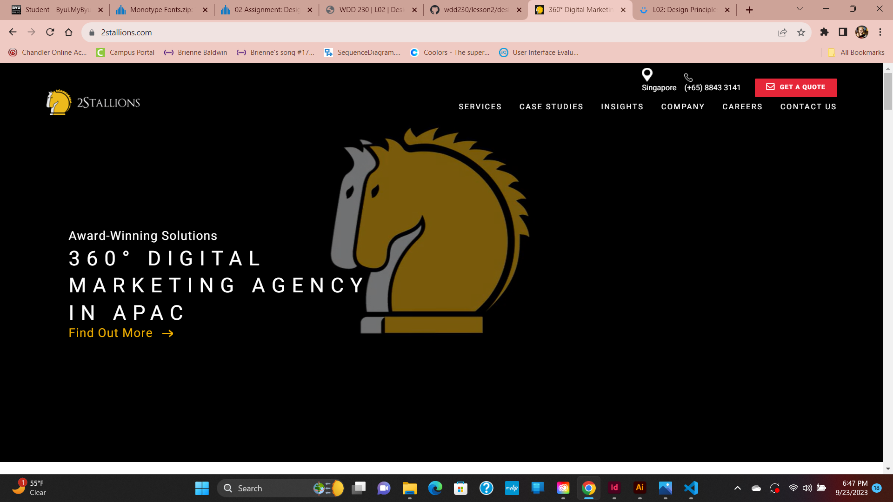
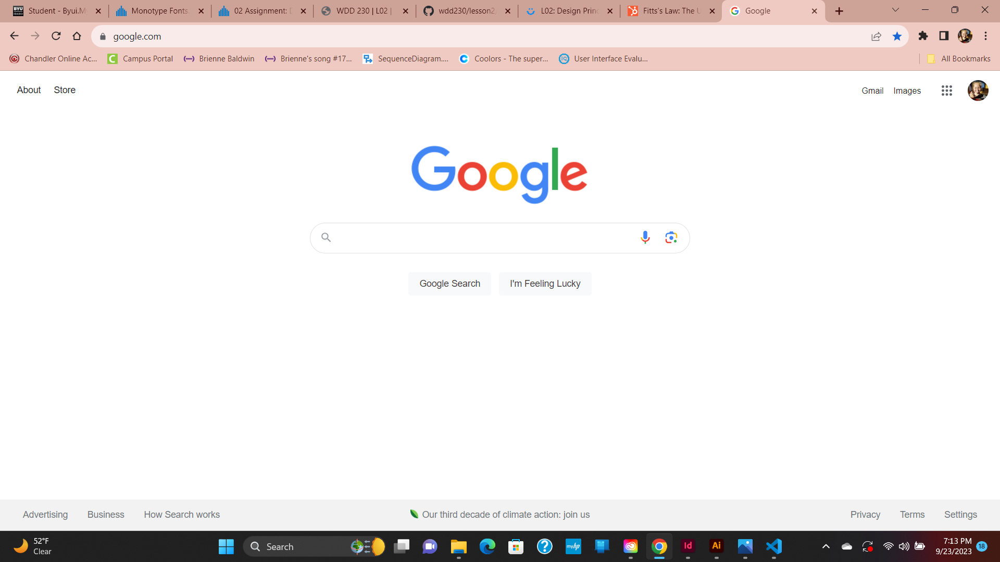

L02: Design Principles Document
Visual Hierarchy
Organization/Company: 2Stallions
Description: Visual Hierarchy is effectively employed on the 2Stallions page it follows a z-pattern. A z-pattern is exactly what it sounds. The visual Hierarchy of the page follows a z-shape line.
According to this website There are many different ways you can utilize visual hierarchy on a website. Some of those ways include a z-pattern, F pattern, using color/contrast, and font size.
Visual Hierarchy is important in a website because a lack of visual hierarchy can lead to the user missing an important piece of imformation. You can almost control the pattern of which the user looks at the website, and what catches their eye. You could lose customers from your website because it is too confusing to look at, or too difficult to find the information you are looking for.
Fitt's Law
Organization/Company: Google
Description: Fitt's Law is effectively employed on the google home page because the search bar is right in the center. Having the search bar in the center makes it extremely easy to find and use quickly.
According to this website, buttons on a website do much better when they are in the center. When buttons are in corners, it can be difficult for mobile users because they need to put in much more effort to hit the button than if it was in the center.
Fitt's Law is important in a website because when we design the site a certain way, so the users can navigate it easier, people stay on the site longer. If a site is hard to use, often times users will immediately go to another site that is easier to use.